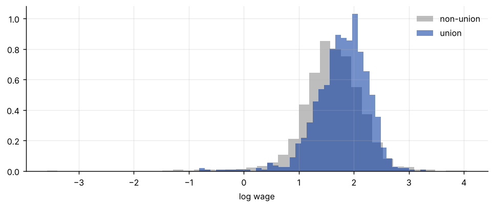
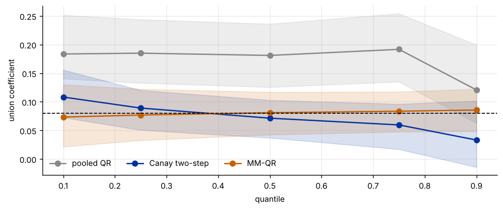

Step 1The question and the model
A union wage premium estimated at the mean says nothing about who gains. Our question is: does the union wage premium differ between low-wage and high-wage men, once permanent differences between workers (ability, motivation) are removed?
The conditional quantile of the log wage is
The unit effect \(\alpha_i\) is a problem in two ways: ignoring it biases \(\beta(\tau)\), and estimating a separate \(\alpha_i\) by quantile (as in a dummy-variable estimator) is imprecise when \(T\) is small (here \(T=8\)). We compare three estimators:
- Pooled quantile regression: ignores \(\alpha_i\).
- Canay (2011): estimate \(\alpha_i\) from a mean fixed-effects regression, subtract it, and run quantile regression on the adjusted wage. This assumes the effects shift all quantiles by the same amount.
- MM-QR (Machado and Santos Silva 2019): location-scale model \(Q_\tau=\alpha_i+x'\beta+(\delta_i+x'\gamma)\,q(\tau)\), so the effect at quantile \(\tau\) is \(\beta+\gamma\,q(\tau)\). Quantiles cannot cross by construction.
| Symbol | Variable in the file | Definition |
|---|---|---|
| \(\ln w_{it}\) | lwage |
log hourly wage |
| \(union_{it}\) | union |
1 if wage set by a union contract |
| \(married_{it}\) | married |
1 if married |
| \(exper^2_{it}\) | expersq |
experience squared |
Before you estimate anything
Be clear which question the quantile refers to. In a panel, the "conditional quantile" can be taken given the unit effect (a worker's own distribution of wages over time) or not (the overall wage distribution). Canay and MM-QR as written here are about the distribution of wages around each worker's own level, and the pooled estimator is about the overall distribution. They answer different questions, and you should say which one your paper asks.
How to write it: model section
We estimate the effect of union membership on log wages at the 10th, 25th, 50th, 75th and 90th percentiles using three approaches: pooled quantile regression, the two-step fixed-effects quantile estimator of Canay (2011) and the location-scale MM-QR estimator of Machado and Santos Silva (2019). All regressions include year effects. Standard errors come from a bootstrap that resamples workers, re-estimating the worker effects in each draw.
Step 2Load the data and look at the wage distribution
import warnings; warnings.filterwarnings("ignore")
import numpy as np, pandas as pd
import matplotlib.pyplot as plt
import statsmodels.api as sm
from statsmodels.regression.quantile_regression import QuantReg
d = pd.read_csv("wagepan_full.csv").sort_values(["nr", "year"]).reset_index(drop=True)
N = d.nr.nunique(); T = d.year.nunique()
xs = ["union", "married", "expersq"]
print(f"{N} men x {T} years = {len(d)} observations; union in {d.union.mean():.1%} of the observations")
print(f"Men whose union status changes at least once: {(d.groupby('nr').union.nunique() > 1).mean():.1%}")
taus = [.1, .25, .5, .75, .9]
tab = pd.DataFrame({"union": d[d.union == 1].lwage.quantile(taus).values, "non-union": d[d.union == 0].lwage.quantile(taus).values}, index=taus)
tab["raw gap"] = tab["union"] - tab["non-union"]
print("\nQuantiles of log wage by union status")
print(tab.round(3).to_string())
fig, ax = plt.subplots(figsize=(7.5, 3.2))
ax.hist(d[d.union == 0].lwage, bins=40, alpha=.55, density=True, label="non-union", color="#888"); ax.hist(d[d.union == 1].lwage, bins=40, alpha=.55, density=True, label="union", color="#0033a0")
ax.set_xlabel("log wage"); ax.legend(frameon=False); plt.tight_layout()545 men x 8 years = 4360 observations; union in 24.4% of the observations
Men whose union status changes at least once: 45.1%
Quantiles of log wage by union status
union non-union raw gap
0.10 1.220 1.016 0.204
0.25 1.520 1.306 0.213
0.50 1.831 1.618 0.213
0.75 2.093 1.944 0.148
0.90 2.322 2.225 0.097
How to read it
The panel has 545 men observed for eight years (4,360 observations), and 24.4% of the observations are union members. Union status changes for 45.1% of the men, which is the within-worker variation that identifies the fixed-effects estimates. The raw gap in log wages between union and non-union workers is about 0.20 to 0.21 at the 10th, 25th and 50th percentiles and falls to 0.15 at the 75th and 0.10 at the 90th. This is the raw gap and mixes the effect of unions with who joins them, which is why worker effects matter.
Step 3Pooled and fixed-effects benchmarks at the mean
yd = pd.get_dummies(d.year, drop_first=True).astype(float)
Xw = pd.concat([d[xs], yd], axis=1)
Yarr = d.lwage.values.reshape(N, T); Xarr = Xw.values.reshape(N, T, -1); k = Xarr.shape[2]
ols_pool = sm.OLS(d.lwage, sm.add_constant(Xw)).fit(cov_type="cluster", cov_kwds={"groups": d.nr})
Xm = Xarr - Xarr.mean(1, keepdims=True); ym = Yarr - Yarr.mean(1, keepdims=True)
b_fe = np.linalg.lstsq(Xm.reshape(-1, k), ym.ravel(), rcond=None)[0]
print("Mean regressions, coefficient on union, married, experience squared")
print(pd.DataFrame({"pooled OLS": ols_pool.params[xs], "worker fixed effects": b_fe[:3]}, index=xs).round(3).to_string())
print(f"\nSD of the estimated worker effects: {np.std(Yarr.mean(1) - Xarr.mean(1) @ b_fe):.2f}; SD of the within residuals: {np.std(ym - Xm @ b_fe):.2f}")Mean regressions, coefficient on union, married, experience squared
pooled OLS worker fixed effects
union 0.177 0.080
married 0.152 0.047
expersq -0.002 -0.005
SD of the estimated worker effects: 0.39; SD of the within residuals: 0.33How to read it
The union coefficient is 0.177 in pooled OLS and 0.080 with worker fixed effects, so more than half of the pooled premium reflects differences between workers. The marriage premium falls from 0.152 to 0.047. The estimated worker effects have a standard deviation of 0.39, larger than the standard deviation of the within-worker residuals (0.33), so permanent differences between workers are a large part of the wage distribution. A quantile estimator that ignores them answers a different question from one that removes them.
Step 4Three quantile estimators
def estimators(Y, X, taus):
n_, T_, k_ = X.shape
Xc = sm.add_constant(X.reshape(-1, k_), has_constant="add")
out = {"pooled": [], "canay": [], "mmqr": []}
Xm_ = X - X.mean(1, keepdims=True); ym_ = Y - Y.mean(1, keepdims=True)
b = np.linalg.lstsq(Xm_.reshape(-1, k_), ym_.ravel(), rcond=None)[0]
alpha = Y.mean(1) - X.mean(1) @ b
ystar = (Y - alpha[:, None]).ravel()
res = (ym_ - Xm_ @ b).ravel()
a_abs = np.abs(ym_ - Xm_ @ b); am = a_abs - a_abs.mean(1, keepdims=True)
gam = np.linalg.lstsq(Xm_.reshape(-1, k_), am.ravel(), rcond=None)[0]
delta = a_abs.mean(1) - X.mean(1) @ gam
scale = (delta[:, None] + X @ gam).ravel(); pos = scale > 1e-3
for tau in taus:
out["pooled"].append(QuantReg(Y.ravel(), Xc).fit(q=tau, max_iter=3000).params[1:4])
out["canay"].append(QuantReg(ystar, Xc).fit(q=tau, max_iter=3000).params[1:4])
qtau = QuantReg(res[pos], scale[pos]).fit(q=tau, max_iter=3000).params[0] # tau-th quantile of the standardised residual
out["mmqr"].append(b[:3] + gam[:3] * qtau)
return {m: np.array(v) for m, v in out.items()}, (scale <= 1e-3).sum()
est, n_bad = estimators(Yarr, Xarr, taus)
print(f"Observations with a non-positive fitted scale (dropped in the MM-QR quantile step): {n_bad}")
for m, lab in [("pooled", "Pooled quantile regression"), ("canay", "Canay two-step fixed-effects QR"), ("mmqr", "MM-QR (location-scale)")]:
print(f"\n{lab}")
print(pd.DataFrame(est[m], index=taus, columns=xs).round(3).T.to_string())Observations with a non-positive fitted scale (dropped in the MM-QR quantile step): 5
Pooled quantile regression
0.10 0.25 0.50 0.75 0.90
union 0.183 0.185 0.181 0.192 0.121
married 0.208 0.177 0.128 0.109 0.067
expersq -0.001 -0.001 -0.002 -0.003 -0.003
Canay two-step fixed-effects QR
0.10 0.25 0.50 0.75 0.90
union 0.108 0.089 0.071 0.060 0.033
married 0.080 0.045 0.036 0.008 0.018
expersq -0.005 -0.005 -0.005 -0.006 -0.006
MM-QR (location-scale)
0.10 0.25 0.50 0.75 0.90
union 0.073 0.077 0.081 0.083 0.086
married 0.063 0.054 0.045 0.038 0.033
expersq -0.006 -0.006 -0.005 -0.005 -0.004How to read it
Pooled quantile regression gives a union coefficient of 0.18 to 0.19 for quantiles up to the 75th and 0.12 at the 90th, close to the pooled OLS value of 0.18 and with no sign of a premium that varies much below the top. The Canay two-step estimator, which removes the worker effects, gives much smaller values that decline steadily with the quantile: 0.108 at the 10th percentile, 0.089, 0.071, 0.060 and 0.033 at the 90th. MM-QR, which removes the worker effects in a different way, gives 0.073, 0.077, 0.081, 0.083 and 0.086, slightly increasing. So both fixed-effects methods agree that the premium is much smaller than in the pooled model, but they disagree about the pattern across quantiles. Five observations have a non-positive fitted scale and are dropped in the MM-QR quantile step.
Step 5Inference: a bootstrap over workers
rng = np.random.default_rng(8)
R = 300; boot = {m: [] for m in est}
for _ in range(R):
idx = rng.integers(0, N, N)
e, _ = estimators(Yarr[idx], Xarr[idx], taus)
for m in boot: boot[m].append(e[m][:, 0]) # union coefficient at each quantile
boot = {m: np.array(v) for m, v in boot.items()}
rows = []
for m in est:
for j, tau in enumerate(taus):
lo, hi = np.percentile(boot[m][:, j], [5, 95])
rows.append((m, tau, est[m][j, 0], boot[m][:, j].std(), lo, hi))
tb = pd.DataFrame(rows, columns=["method", "quantile", "union coef.", "boot s.e.", "90% low", "90% high"])
print(tb.round(3).to_string(index=False))
fig, ax = plt.subplots(figsize=(8, 3.4))
for m, c, lab in [("pooled", "#888", "pooled QR"), ("canay", "#0033a0", "Canay two-step"), ("mmqr", "#c46000", "MM-QR")]:
lo, hi = np.percentile(boot[m], [5, 95], axis=0)
ax.plot(taus, est[m][:, 0], marker="o", color=c, label=lab); ax.fill_between(taus, lo, hi, color=c, alpha=.15)
ax.axhline(b_fe[0], color="#000", ls="--", lw=1); ax.set_xlabel("quantile"); ax.set_ylabel("union coefficient"); ax.legend(frameon=False, ncol=3)
plt.tight_layout()method quantile union coef. boot s.e. 90% low 90% high pooled 0.10 0.183 0.034 0.140 0.251 pooled 0.25 0.185 0.035 0.133 0.244 pooled 0.50 0.181 0.034 0.126 0.236 pooled 0.75 0.192 0.038 0.135 0.254 pooled 0.90 0.121 0.041 0.063 0.200 canay 0.10 0.108 0.025 0.073 0.156 canay 0.25 0.089 0.021 0.051 0.120 canay 0.50 0.071 0.020 0.037 0.103 canay 0.75 0.060 0.024 0.017 0.096 canay 0.90 0.033 0.034 -0.014 0.102 mmqr 0.10 0.073 0.034 0.021 0.130 mmqr 0.25 0.077 0.027 0.033 0.122 mmqr 0.50 0.081 0.022 0.042 0.117 mmqr 0.75 0.083 0.021 0.048 0.118 mmqr 0.90 0.086 0.022 0.048 0.122

How to read it
Standard errors from a bootstrap over workers are 0.03 to 0.04 for the pooled estimates, 0.02 to 0.03 for Canay (0.034 at the 90th) and 0.02 to 0.03 for MM-QR (0.034 at the 10th). The 90% intervals of the Canay estimates are 0.07 to 0.16 at the 10th percentile and −0.01 to 0.10 at the 90th, where the premium is not significant. The MM-QR intervals exclude zero at every quantile. The pooled intervals are well above the fixed-effects ones, so the difference between pooled and within-worker estimates is not a matter of noise. The figure shows the three paths and the fixed-effects mean coefficient (dashed line at 0.08).
Step 6Does the effect differ across quantiles?
print("Difference in the union coefficient between the 90th and the 10th percentile (bootstrap 95% interval)")
for m in est:
dd = boot[m][:, 4] - boot[m][:, 0]; e_ = est[m][4, 0] - est[m][0, 0]
lo, hi = np.percentile(dd, [2.5, 97.5]); p = (np.abs(dd - dd.mean()) >= abs(e_)).mean()
print(f" {m:7s} {e_:6.3f} [{lo:6.3f}, {hi:6.3f}] p = {p:.3f}")
dd = boot["canay"][:, 2] - boot["canay"][:, 0]
print(f"\nCanay, median minus 10th percentile: {est['canay'][2, 0] - est['canay'][0, 0]:.3f}, 95% interval [{np.percentile(dd, 2.5):.3f}, {np.percentile(dd, 97.5):.3f}]")
print("Union coefficient at the mean (worker fixed effects):", round(float(b_fe[0]), 3))Difference in the union coefficient between the 90th and the 10th percentile (bootstrap 95% interval) pooled -0.063 [-0.155, 0.023] p = 0.197 canay -0.075 [-0.143, -0.001] p = 0.040 mmqr 0.012 [-0.061, 0.078] p = 0.720 Canay, median minus 10th percentile: -0.037, 95% interval [-0.079, -0.007] Union coefficient at the mean (worker fixed effects): 0.08
How to read it
The test of whether the union premium differs between the 90th and the 10th percentile gives different answers by method. For Canay the difference is −0.075 (95% interval −0.143 to −0.001, p = 0.040), so the premium is larger for low-wage men; the median is also below the 10th percentile (−0.037, interval −0.079 to −0.007). For MM-QR the difference is 0.012 (p = 0.72), no pattern, and for pooled QR it is −0.063 (p = 0.20), not significant. The Canay result is suggestive and marginal, and it does not survive a change of estimator. The honest summary is that the union premium is about 0.07 to 0.11 for most workers and that the evidence that it declines along the wage distribution depends on the method.
How to write it: results
The union wage premium is 0.177 in pooled OLS and 0.080 with worker fixed effects. At the 10th, 25th, 50th, 75th and 90th percentiles of the wage distribution, pooled quantile regression gives premia of 0.18 to 0.19 up to the 75th percentile and 0.12 at the 90th. The two-step fixed-effects estimator of Canay (2011) gives premia that decline from 0.108 to 0.033 (bootstrap standard errors 0.02 to 0.03), and the difference between the 90th and the 10th percentile is −0.075 (95% interval −0.143 to −0.001). The MM-QR estimator of Machado and Santos Silva (2019) gives premia of 0.073 to 0.086 with no significant variation (difference 0.012, p = 0.72). We conclude that removing worker effects roughly halves the premium at every quantile, and that evidence of a larger premium for low-wage workers is weak and depends on the estimator.
Step 7What to report in the paper
| Item | What to show |
|---|---|
| Question | whether the quantile refers to the overall or the within-worker distribution |
| Estimators | at least two ways to handle unit effects, and the pooled estimate for comparison |
| Quantiles | which ones and why (for example 10, 25, 50, 75, 90) |
| Inference | the bootstrap design (resample units, re-estimate the effects) and the number of draws |
| Heterogeneity | the test of equal coefficients across quantiles, not only a plot |
| Assumptions | what each method imposes: location shift (Canay) or location-scale (MM-QR) |
Common mistakes
- Ignoring unit effects. Pooled quantile regression gives a very different answer from the within-worker estimators here (see the figure).
- Adding a dummy for each unit when T is small. Quantile estimates with many fixed effects are biased unless T is large. Use a two-step or location-scale approach, or a penalised estimator.
- Resampling observations instead of units. The bootstrap must resample whole workers, otherwise serial correlation is ignored.
- Reading one method's pattern as the truth. Different assumptions give different patterns. Show more than one.
- Forgetting that the quantile is conditional. A change at the 90th percentile of the conditional distribution is not a change for the people who are at the top of the overall distribution.
- Letting quantile paths cross. Pooled and Canay estimates can cross. Check, or use an estimator that cannot.